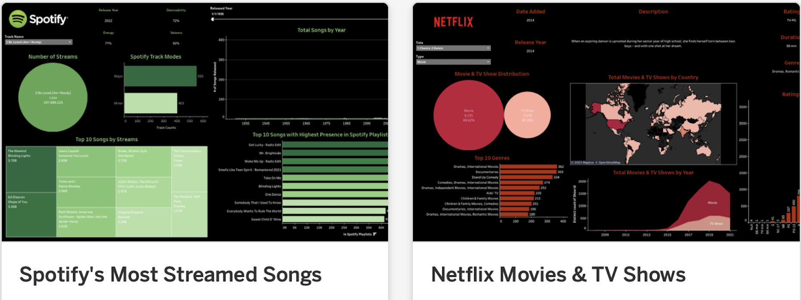
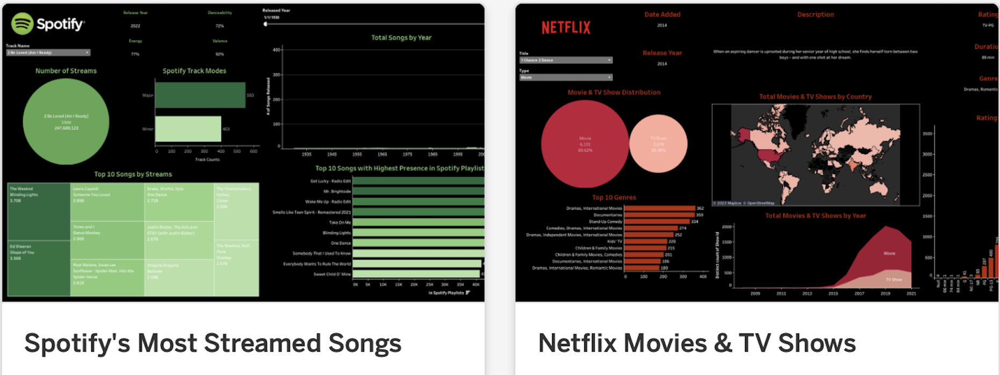

About
Alaina Johnson
Hi, and welcome! I’m so glad you’re here. This space is where I share some of the data analysis projects I’ve worked on. Each one tells a story about how I take raw data and turn it into something meaningful and useful.
This portfolio isn’t just about showcasing technical skills. It’s also about my approach to making data clear, approachable, and actionable. I believe that the best analysis doesn’t just sit in a spreadsheet. It helps people make smarter decisions and actually understand what’s going on.
Feel free to explore the projects, tools, and methods I’ve used along the way. Whether you’re a fellow data nerd, a potential collaborator, or just curious about how data can tell a story, I hope you find something here that sparks your interest.
 

Tableau has been my canvas, and data, my paint. I've leveraged its capabilities to distill complex information into clear, actionable insights. Whether it's simplifying complex business data or shedding light on intriguing trends, my goal is to provide a compelling visual experience that empowers decision-makers.
Whether you're a fellow Tableau enthusiast, a potential collaborator, or someone seeking to harness the full potential of data visualization, I hope this portfolio inspires you.
Here, I showcase my expertise in SQL, the language that unlocks the potential of structured data. Explore a diverse range of projects where I've mastered querying, data manipulation, and database optimization.
Each project reflects my commitment to extracting valuable insights from data efficiently. Whether you're a fellow SQL enthusiast or looking to harness structured data's power, I invite you to dive into this portfolio.